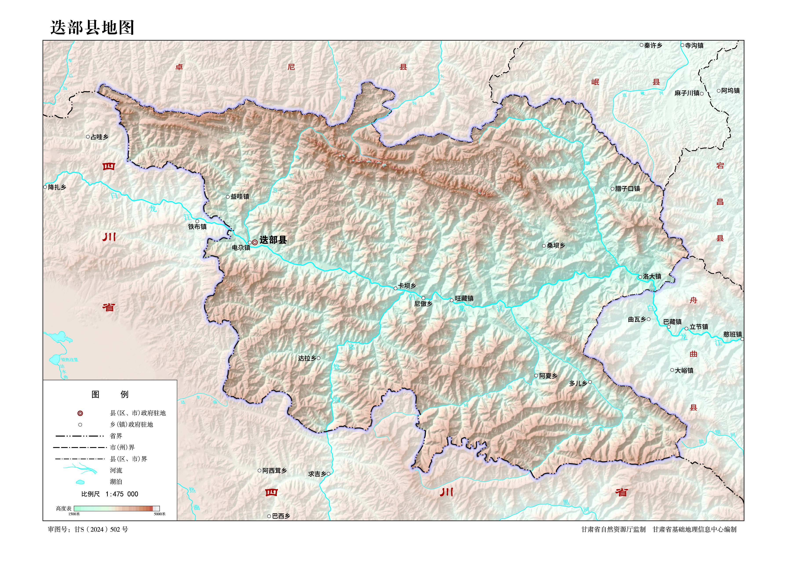

全球尺度看迭部
扎尕那农林牧复合系统的全球农业文化遗产坐标与生物多样性热点对比。

中国尺度看迭部
青藏高原东缘生态屏障、长江黄河上游水源涵养地的全国意义。

省域尺度看迭部
甘肃南部生态安全格局中的迭部，白龙江流域上下游的系统关联。

县域尺度看迭部
5108 平方公里的垂直地带性、物产分布与人口聚落空间格局。

长征精神
俄界会议、腊子口战役与迭部红色地理遗迹，长征精神的地理课堂。
互动留言
学生提问、学习心得、野外考察记录与教师答疑的交流空间。